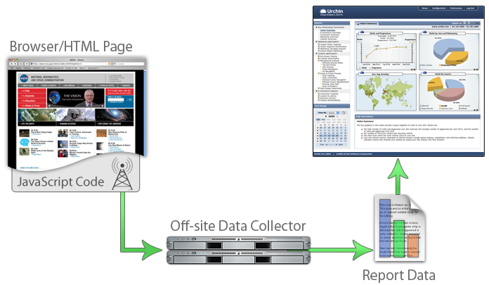

Fonctionnement de l'UTM (Urchin Traffic Monitor)
Présentation
Disponible depuis Urchin 4, le système Urchin Traffic Monitor (UTM) en attente de brevet a été spécialement conçu pour délivrer les statistiques les plus précises concernant les visiteurs uniques de sites Web. Pour les entreprises désireuses de mieux cerner le comportement de leurs visiteurs en ligne, l'UTM est une technologie extrêmement utile qui allie contrôle des données et informations de première qualité côté client et serveur. Cette technologie facile à installer permet aux responsables d'entreprise d'identifier avec exactitude les visiteurs uniques et le chemin qu'ils empruntent, et renvoie des indices de fréquentation, notamment sur les nouveaux visiteurs, les visiteurs connus et la fréquence d'utilisation associée. Les versions de l'UTM les plus récentes proposent en outre des fonctions de suivi de campagne avancées.
Le système Urchin Traffic Monitor est composé de deux éléments : le détecteur UTM qui consiste en un extrait de code installé dans le contenu du site Web et le moteur UTM qui est intégré au moteur Urchin de traitement des journaux. Le détecteur UTM réalise la collecte des données côté client et transmet toutes les consultations de page à Urchin. Les informations du client sont ensuite combinées à celles du serveur grâce au moteur UTM afin de fournir une image plus précise et exhaustive de l'activité enregistrée sur le site Web.
Le détecteur UTM est un court extrait de code JavaScript remplissant deux fonctions importantes. D'une part, il annule les effets de la mise en cache en forçant l'envoi aux serveurs Web de Google d'au moins un appel de fichier par consultation de page. D'autre part, le détecteur UTM identifie chaque visiteur de façon unique avec un cookie interne pour permettre la distinction entre nouveaux visiteurs et visiteurs connus. L'identifiant de cookie est une balise de communication que seul le serveur Web peut consulter, à la manière d'un identifiant de session. Ce procédé est tout à fait différent des cookies tiers qui envoient des informations à l'extérieur du système et violent ainsi de nombreux principes de confidentialité.
Le système UTM fonctionne comme suit. Le serveur Web assure deux fonctions élémentaires : affichage du contenu et journalisation. Le contenu envoyé au navigateur des internautes inclut le détecteur UTM qui définit les identifiants uniques et envoie une demande supplémentaire à ce même serveur Web. Le moteur UTM, partie intégrante du moteur Urchin de traitement des journaux, utilise les données de cette demande pour donner un aperçu précis et plus complet du comportement des visiteurs.
Détecteur UTM
Le détecteur UTM offre une précision et une exhaustivité accrues en annulant les effets de la mise en cache et de l'utilisation d'un proxy. Par exemple, lorsque l'internaute revient à la page précédemment consultée, le contenu de cette page est extrait de la mémoire cache du navigateur. Cela fonctionne également de cette manière lorsque la mise en cache est assurée par un fournisseur de services. Dans ce cas, le serveur Web n'a pas connaissance de la consultation de page. C'est pourquoi le détecteur UTM active un appel de fichier unique supplémentaire qui entraîne la transmission d'un petit enregistrement au serveur Web. Cette information est alors consignée dans les fichiers journaux qui répertorient à présent la consultation de page initiale.

Le détecteur UTM remplit une deuxième fonction importante : identifier de façon unique chaque session et chaque visiteur. À l'aide d'une technologie en attente de brevet combinant plusieurs cookies de navigateur, le détecteur reconnaît et initialise les identifiants de session et de visiteur unique afin de distinguer avec certitude les nouveaux visiteurs des visiteurs connus, quelle que soit la configuration du serveur proxy. La plupart des fournisseurs de services utilisent des serveurs proxy pour recycler les adresses IP et regrouper les internautes derrière des pare-feu. Cela peut poser des problèmes de suivi avec les fichiers journaux standard, qui se servent généralement de l'adresse IP pour identifier les internautes.
Le détecteur UTM parvient à passer au travers du proxy en utilisant des identifiants de cookie plutôt que des adresses IP. Par exemple, lorsqu'un visiteur accède pour la première fois au site Web en passant par un pare-feu à l'aide d'une adresse IP, le détecteur UTM qui se trouve dans la page consultée lui attribue un identifiant enregistré dans son navigateur.
Lors de sa prochaine visite, l'identifiant unique de ce visiteur est transmis au serveur Web accompagné de chaque demande. Ainsi, la technologie UTM est capable de reconnaître un visiteur à l'aide de son identifiant d'origine, même si son adresse IP a changé. Outre le contournement des techniques complexes utilisées par les serveurs proxy, cela permet de suivre les visiteurs nomades qui utilisent leurs ordinateurs portables lors de leurs déplacements, avec différents fournisseurs d'accès.